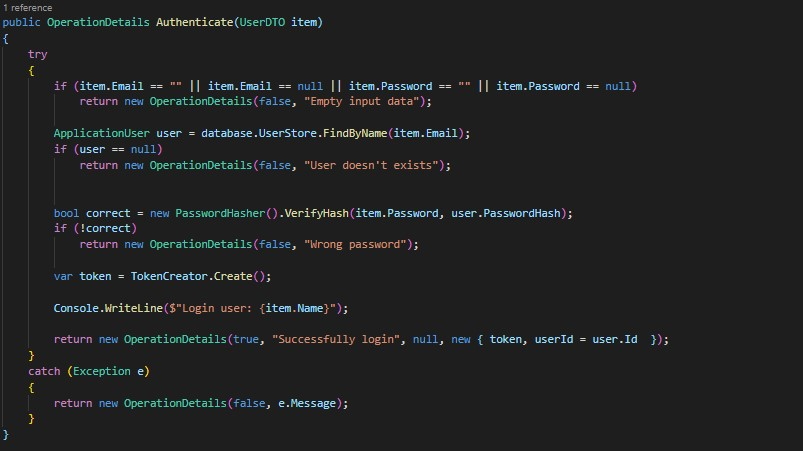
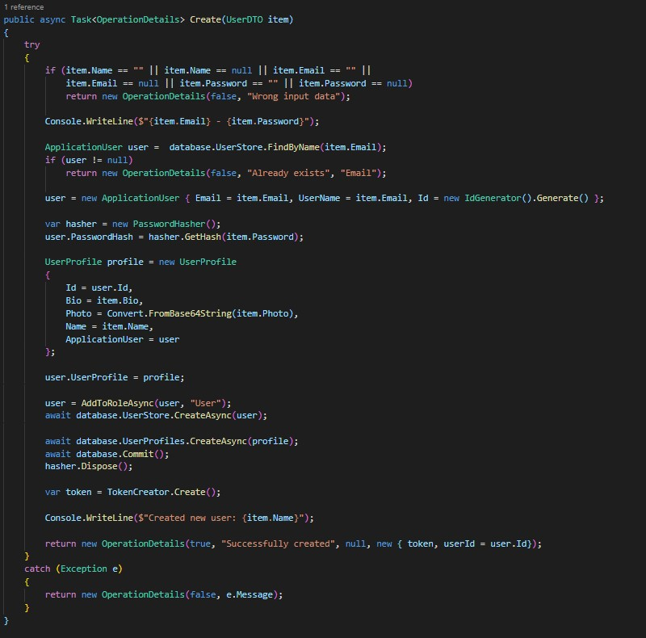
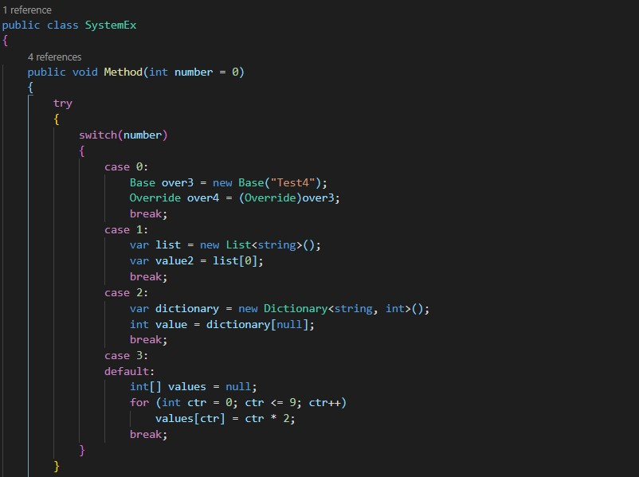
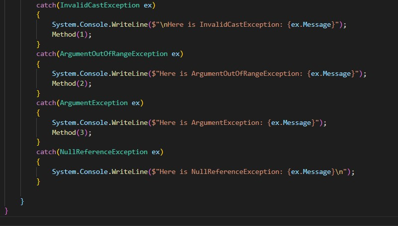
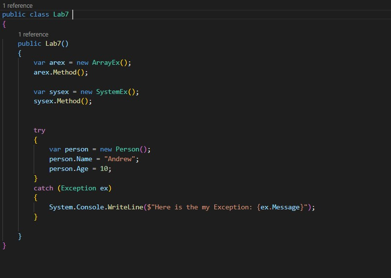
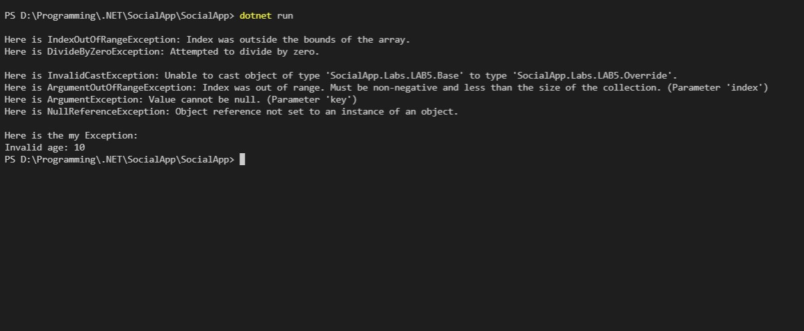
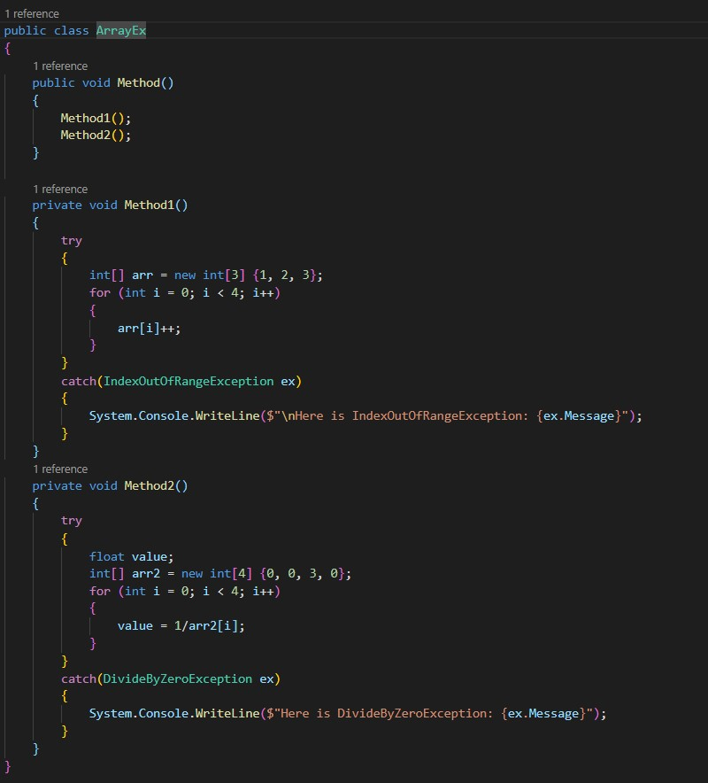
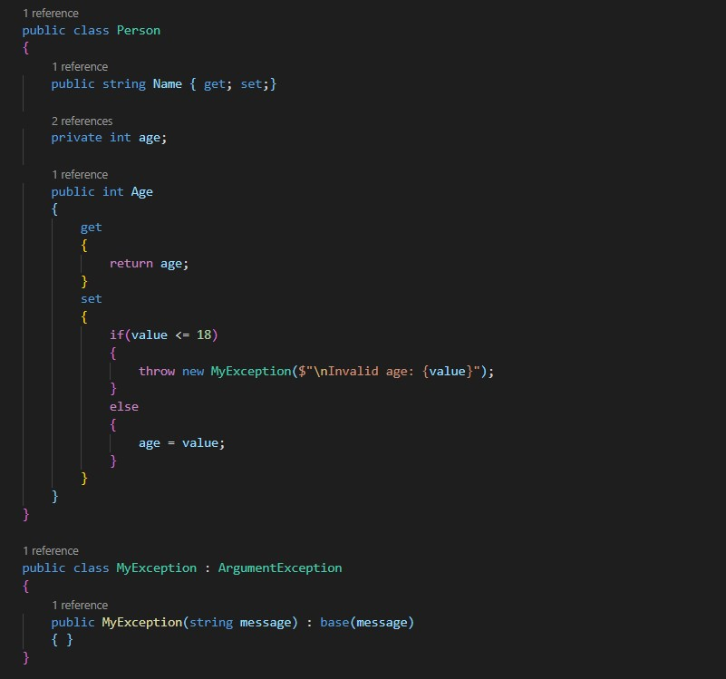

Тема: ВИКЛЮЧНІ СИТУАЦІЇ.
Мета: придбати практичні навички роботи з виключними ситуаціями, які виникають при роботі програми.
- Постановка задачі:
- До програмного коду попередніх лабораторних робіт добавити та описати:
-
- 3.1. виключення, яке можуть виникати при некоректній авторизації;
- 3.2. виключення, з застосуванням фільтрів виключення;
- 3.3. виключення, які виникають при обробці масивів;
- 3.4. системні виключення;
- 3.5. власні виключення;
- 3.6. протестувати програму, зробити висновки.
Місце розташування проекту: посилання.
Середовище розробки: в ході реалізації проекту в основому використовуються дві програми - Visual Studio 2019 та Visual Studio Code.
НЕКОРЕКТНА АВТОРИЗАЦІЯ
Code
 ФІЛЬТРИ ВИКЛЮЧЕНЬ
Code
 Main
Out
ВИКЛЮЧЕННЯ ПРИ ОБРОБЦІ МАСИВІВ
Code
Main
Out
СИСТЕМНІ ВИКЛЮЧЕННЯ
Code
Main
Out
ВЛАСНІ ВИКЛЮЧЕННЯ
Code
Main
Out
Висновок
В ході виконання даної лабораторної роботи я придбав практичні навички роботи з виключними ситуаціями, які виникають при роботі програми.